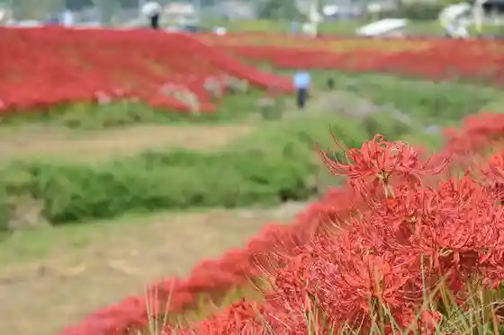
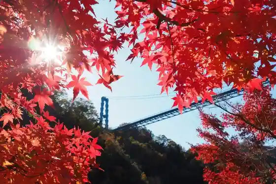
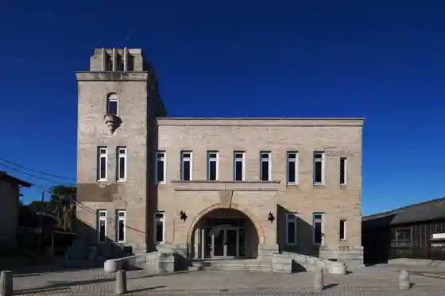
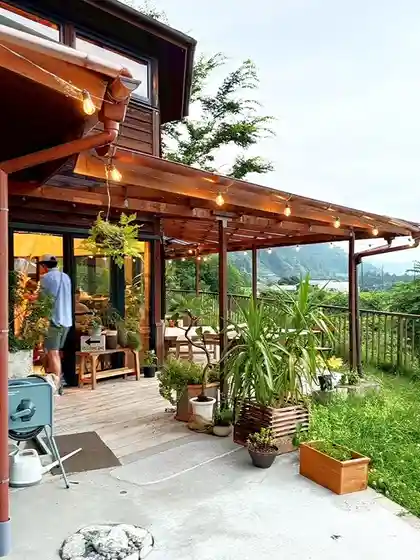

Genji Kawa no Higan Hana (Genji Kawa no Higan Hana Wo Hozon Suru Kai)
Hitachiota, Ibaraki · Official / source link

Ryujin Dai Tsuribashi
Hitachiota, Ibaraki · 0294-87-0375 · Official / source link

Kujiragaoka Shopping Street
Hitachiota, Ibaraki · 0294-72-3111 · Official / source link

Roadside Station Satomi
Hitachiota, Ibaraki · 0294-82-2100 · Official / source link

Roadside Station Hitachiota Komon no Sato
Hitachiota, Ibaraki · 0294-85-6888 · Official / source link
Inaka no Omotenashi Iwakura Kosen
Hitachiota, Ibaraki · 0294-85-1126 · Official / source link
Tokugawa Museum Bunkan Nishiyama Goten
Hitachiota, Ibaraki · 0294-72-1538 · Official / source link
Satomi Onsen Hoyo Center Nuku Mori Baths
Hitachiota, Ibaraki · 0294-82-3366 · Official / source link
Nishiyama Village Togen
Hitachiota, Ibaraki · 0294-73-1300 · Official / source link
Purato Satomi
Hitachiota, Ibaraki · 0294-82-4221 · Official / source link
Satake Tera
Hitachiota, Ibaraki · 294-72-2078 · Official / source link
Kamegafuchi
Hitachiota, Ibaraki · 0294-72-8194 · Official / source link
Nishi Kinsha Soba no Sato Soba Workshop
Hitachiota, Ibaraki · 0294-76-9000 · Official / source link
Ryujin Dam
Hitachiota, Ibaraki · 0294-72-8194 · Official / source link
Hiyama Orchard
Hitachiota, Ibaraki · 0294-33-5357 · Official / source link
Forest of THEN (Kyuri Mino Soto Katsudo Center)
Hitachiota, Ibaraki · 0294-82-4120 · Official / source link
Furusato Center Ryu Tchan no Yu
Hitachiota, Ibaraki · 0294-87-0543 · Official / source link
(Mokusei no Kane) (Ryujin Kariyon)
Hitachiota, Ibaraki · 0294-87-0375 · Official / source link
Ota Onsen Yamabuki Baths
Hitachiota, Ibaraki · 0294-72-2111 · Official / source link
Hitachiota Kyoho Budo Kanko Sono
Hitachiota, Ibaraki · 0294-70-3488 · Official / source link
Yonebishi Shoyu (Kabu)
Hitachiota, Ibaraki · 0294-72-2255 · Official / source link
JA Ibaraki Mizuho Suifu Nosambutsu Chokubai Tokoro
Hitachiota, Ibaraki · 0294-85-1130 · Official / source link
JA Ibaraki Mizuho Satomi Seisambutsu Chokubai Tokoro
Hitachiota, Ibaraki · 0294-82-3883 · Official / source link
Suifu Bussan Center Resutoran Mori no Kaze
Hitachiota, Ibaraki · 0294-87-0375 · Official / source link
Shichi Han no Shidare Sakura
Hitachiota, Ibaraki · 0294-72-8194 · Official / source link
Suifu Ryu no Sato Park
Hitachiota, Ibaraki · 0294-87-0543 · Official / source link
Nishiyama Park
Hitachiota, Ibaraki · 0294-72-8194 · Official / source link
Makura Ishidera
Hitachiota, Ibaraki · Official / source link
Mito Hakkei (Ota Rakugan)
Hitachiota, Ibaraki · 0294-72-8071 · Official / source link
Mito Hakkei (Yamadera Bansho)
Hitachiota, Ibaraki · 0294-72-8071 · Official / source link
Setsuko no Ichigo Sono
Hitachiota, Ibaraki · 0294-85-1160 · Official / source link
Senpuku Tera no Shidarezakura
Hitachiota, Ibaraki · 0294-72-8194 · Official / source link
Satomi Fureai Kan
Hitachiota, Ibaraki · 0294-70-7131 · Official / source link
JA Ibaraki Mizuho Hitachiota Bussan Center (Kome Workshop)
Hitachiota, Ibaraki · 0294-70-3333 · Official / source link
RestaurantcafeSweet (Resutorankafesuiito)
Hitachiota, Ibaraki · 0294-80-3737 · Official / source link
JA Ibaraki Mizuho Chokubai Center (Seya no Kei)
Hitachiota, Ibaraki · 0294-70-2525 · Official / source link
Okabe
Hitachiota, Ibaraki · 0294-74-2171 · Official / source link